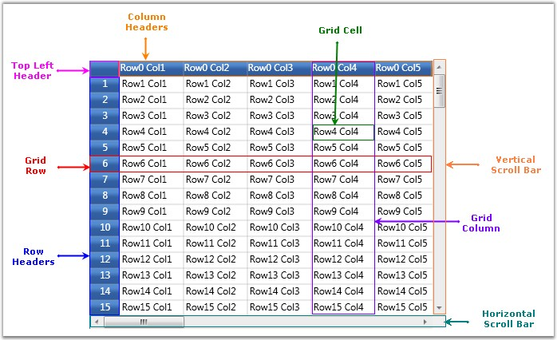
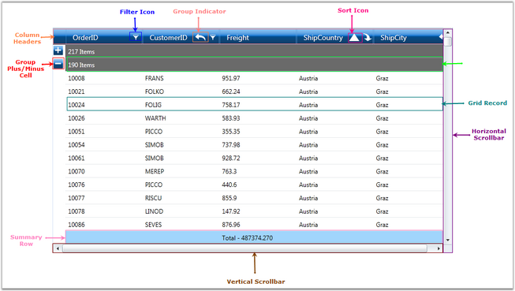

Essential Grid for Silverlight is a package of powerful grid controls that provide cell-oriented features and acts as an efficient display engine for tabular data that can be customized down to the cell level. It also offers excellent performance characteristics, such as Virtual Mode and high frequency updates, which makes the grid suitable for real time applications.
Essential Grid package comprises of the following three types of Grid controls:
Let us see the control structure of these individual controls.
Grid Control
It is a general purpose grid that can be used in any form, either holding its own data or virtually bound to an external data source. It acts as a base grid for the other two grid types (Grid Data and Grid Tree). Most of the features are shared among the three grid types. In Grid control, each cell acts as single entity which is suitable for applications such as Excel simulator, where the data of the grid cells are not interrelated, and need to be maintained in the specific cells themselves. You can also operate this control in virtual mode where the data is not stored in the grid’s internal data structure but it comes from an external source like data table (for example). In virtual mode, the data will be loaded into the grid dynamically, only on demand or when the user tries to view a data.

Figure 19: Structure of Grid Control
Grid Data Control
The Grid Data control is designed to be bound with a data source. In the Grid Data control, each column behaves as a single entity. This grid is more column-centric and can be used to display tabular data which are interrelated. Unlike the base grid, this grid does not store the data values in its data structures; instead it gets connected to an external data source (for more detailed info about data source connection, refer Data binding section).
The following features are available for GDC which helps to organize the data:
· Sorting
· Grouping
· Filtering
· Summarizing

Figure 20: Structure of Grid Data Control